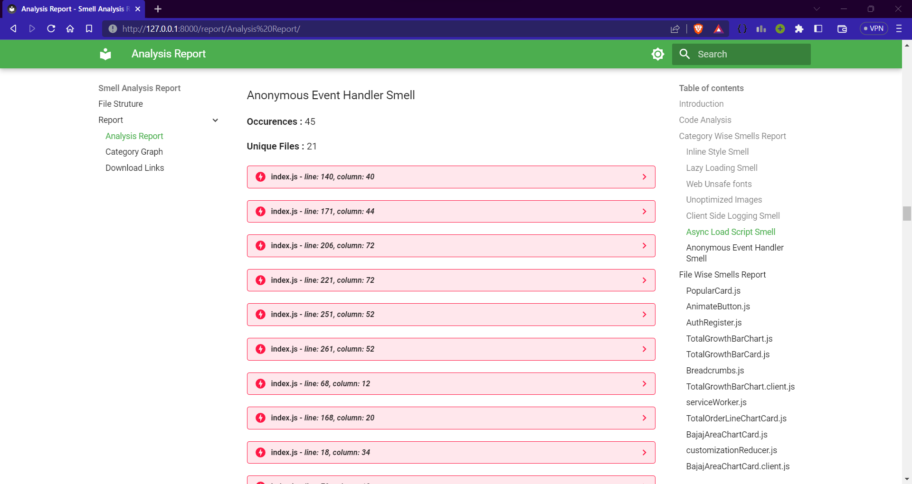
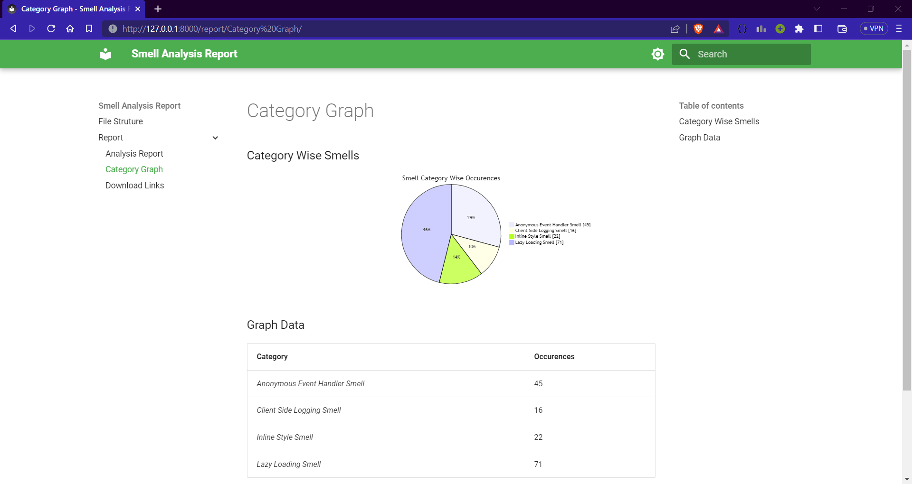
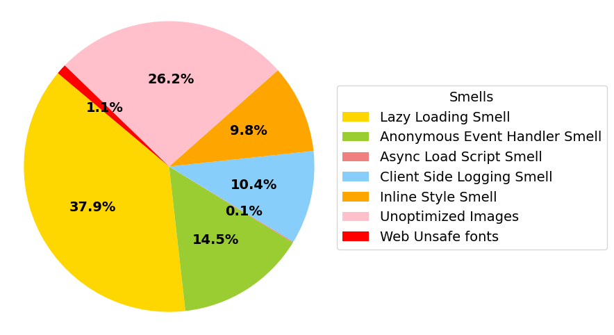

UIEcoSense - A Tool for detecting UI Energy smells in REACT
Tool Description
UIEcoSense is a tool for detecting UI Energy smells in REACT. Developed using node.js and python, UIEcoSense is a command line tool that takes the source of a REACT application as input and generates a report of the smells present in the application.
Currently, UIEcoSense detects the following UI Energy smells:
- Lazy Loading Smell
- Anonymous Event Handler Smell
- Async Load Script Smell
- Client Side Logging Smell
- Inline Style Smell
- Unoptimized Images
- Web Unsafe fonts
For the above smells, UIEcoSense provides the following information in the report:
- Analysis Report - A report of the smells detected, location of the smells and color coded severity of the smells.
- Category Graph - A graph of the smells detected, categorized by the type of smell.
- Download Links - Links to download the JSON file of the smells and AST generated.
Installation
Download from Github RepoStep 1: Clone or download this github repository:
git clone https://github.com/UI-Energy-Smells/UIEcoSense
Step 2: Get into the main directory:
cd UIEcoSense
Step 3: Install the requirements:
For installing the tool:
npm install
For installing mkdocs-material which is used for generating the report:
pip install --upgrade pip
pip install mkdocs
pip install mkdocs-material
pip install pymdown-extensions
Usage
Step 1: Make sure the terminal is the src directory.
Step 2: Copy the source code of the REACT application to be analyzed into the test folder in the src directory.
Step 3: For Windows
Make sure powershell is installed.
Run the following command:
.\run.ps1
Step 3: For Linux
Run the following command:
bash run.bash
Step 4: The report will be generated & served. The link will be present in the terminal.Click on the link to open it
Architecture Diagram

UIEcoSense can be divided into 2 main phases as illustrated in the above figure.
1. Smells Detection
In the first phase, for code based analysis Babel is used to generate the AST of the file. For each smell, a visitor is created and all of them are merged into a checklist. When the AST is traversed, the checklist is used to detect the smells. For non code based analysis, the tool analysis the files present in the folder to detect the smells based on violating extensions. All the smells from both the analysis of all the files are merged into single JSON file.
2. Report Generation
In the next phase, we use a python script to generate the report from the JSON file generated in the previous phase. The script creates markdown files containing the analysis report, category graph and links to download the JSON file and AST. The markdown files are then used to generate the report using mkdocs-material which is then used to serve the report. Energy smells are color-coded based on severity: red for severe, yellow for medium, and light blue for suggestions.
| Smell | Rule to Flag |
|---|---|
| Anonymous Event Handlers | If an attribute that begins with "on"(example: onClick etc) whoose value is an Arrow Expression |
| Asynchronous Script Loading | If a script tag is present without async attribute |
| Lazy Loading | If img tag is present and don't have loading set to "lazy". Import statements for user componenets are present(example: import "./Button") |
| Client Side Logging | If console method is present(example: console.log()) |
| Inline Style | If style attribute is present |
| Unoptimized Images | If files with extensions png, jpeg or jpg are present in the repository. |
| Web Unsafe fonts | If files with extensions ttf, otf are present in the repository. |
Running Example
The tool was run on the following repository: codedthemes/berry-free-react-admin-template and the report was generated.
Analysis Report 
Category Graph 
Download Links

Result
The tool has been tested on 70 repositories and 3169 smells were detected. The distribution of the smells is as shown in the figure below. The most common smells were Lazy Loading Smell and Unoptimized Images, least common were Async Load Script Smell and Web Unsafe fonts
Demonstration Video
The following video demonstrates the working of the tool.
Contributors
Siddhartha G - Preethi Varsha - Sridhar Chimalakonda